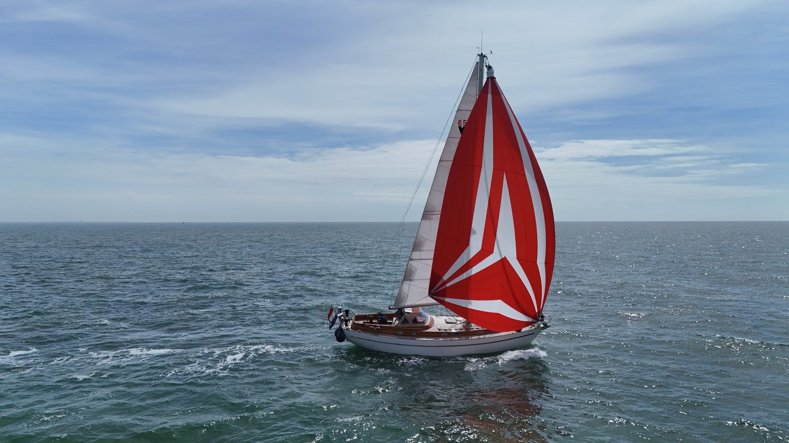

⚓
Voorbeeld · 22 juni 2028
Biskaje ligt achter ons
Drie dagen en twee nachten, een stevige westelijke deining en één onvergetelijke nacht met dolfijnen in het boeggolf-licht. We liggen nu in A Coruña…
Live positie via Starlink — plus het opstapschema, het bemanningsklassement en het logboek.
Onze positie wordt automatisch ge-üpdatet via Starlink. Klik op de kaart voor details per waypoint.
Voor de opstappers: hieronder zie je per leg waar de boot hoort te zijn. Op de live-kaart check je of we op schema liggen vóór je je vlucht boekt.
| Periode 2028 | Leg | Traject | Aan boord |
|---|---|---|---|
| 13 – 24 mei | 1 | Stellendam → Kanaalkust → Cherbourg (±280 nm) | Opstappers |
| 28 mei – 3 jun | 2 | Cherbourg → Guernsey → Brest (±185 nm) | Opstappers |
| venster 5 – 18 jun | 3 | Biskaje: Brest → A Coruña (±360 nm) | Ervaren opstapper + 1 plek |
| ± 23 – 27 jun | 3b | Rías van Galicië → Vigo (±110 nm) | Opstappers |
| 28 jun – 9 jul | 4 | Vigo → Portugese kust → Lissabon (±230 nm) | Opstappers |
| ± 10 – 15 jul | 5 | Oversteek Lissabon → Madeira (±515 nm) | Max 2 opstappers |
| ± 20 – 22 jul | 6 | Madeira → La Graciosa (±270 nm) | Max 2 opstappers |
| 22 – 31 jul | 7 | Canarisch eilandhoppen → Las Palmas (±150 nm) | Familie |
| ± 1 – 6 aug | 8 | Gran Canaria → Gran Tarajal → Agadir (±345 nm) | Max 2 opstappers |
| ± 7 – 24 aug | 9 | Marokko-kust → Tanger → Gibraltar (±430 nm) | Zelfde crew hele kust |
| 25 aug – 1 sep | — | Pauzeweek Gibraltar/La Línea | Rust |
| ± 2 – 6 sep | 10 | Gibraltar → Cartagena → Ibiza (±380 nm) | Opstappers |
| 6 – 20 sep | 11 | Balearen: Ibiza → Mallorca → Mahón (±170 nm) | Opstappers |
| ± 21 – 23 sep | 12 | Oversteek Mahón → Alghero (±190 nm) | Max 2 opstappers |
| 24 sep – eind okt | 13 | Sardinië & Corsica-lus → Olbia (±250 nm) | Wisselend |
| eind okt | 14 | Olbia: boot de kant op, inwinteren — thuis ± 1 nov | Kees (+1) |
Automatisch bijgehouden uit de boordinstrumenten (Signal K): wie maakte de langste oversteek, wie had de meeste wind? Records krijgen een 🏆.
| Opstapper | Mijlen totaal | Langste non-stop | Max wind | Topsnelheid | Nachten op zee |
|---|---|---|---|---|---|
| Kees (schipper) | 🏆 3.150 nm | 530 nm · 96 u | 32 kn | 🏆 9,4 kn | 🏆 23 |
| Opstapper A | 1.420 nm | 365 nm · 68 u | 🏆 32 kn | 9,2 kn | 9 |
| Opstapper B | 1.180 nm | 🏆 530 nm · 96 u | 27 kn | 8,8 kn | 8 |
| Opstapper C | 690 nm | 280 nm · 48 u | 22 kn | 8,1 kn | 4 |
| Opstapper D | 295 nm | 120 nm · 26 u | 24 kn | 7,6 kn | 2 |
Verhalen en foto’s van onderweg — ge-üpload zodra er Starlink of haven-wifi is.
Drie dagen en twee nachten, een stevige westelijke deining en één onvergetelijke nacht met dolfijnen in het boeggolf-licht. We liggen nu in A Coruña…
Na vijf dagen oceaan doemt Porto Santo op uit de heiïgheid. De eerste echte oceaanpassage zit erop — en de bemanning wil meteen meer…
Marokko vanaf het water is een andere wereld. Vissersbootjes, de geur van houtskool vanaf de kade, en een havenmeester die ons mee naar huis nam…
Vindö 65 S · 38 voet · polyester

Onze Vindö 65 S is een Zweedse klassieker: 38 voet, mahonie-opbouw, gebouwd om zeewaardig en comfortabel te zijn. Voor deze reis is ze grondig voorbereid: nieuwe verstaging (2026), lithium-accubank van 400 Ah, Starlink voor communicatie en weer, AIS, en een Volvo Penta die al 3.800 uur trouwe dienst bewijst.